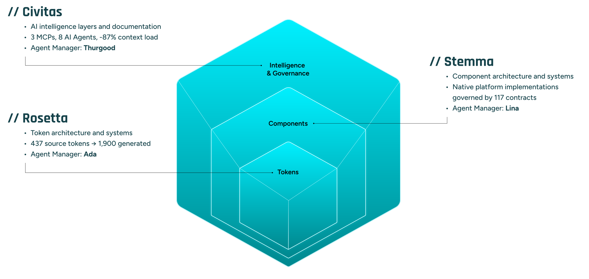

// Venmo
Proven in production
Shipped inside the first product built on a new visual language.
 Click to expand
Click to expand
"And I did all this with an Excel sheet."
Design System Architect + Design Engineer
Design systems are relationship infrastructure, not just component libraries.
Engineers felt burned. Designers felt defensive.
— And I was walking into the middle of it.
The gap was trust.
The bridge was shared language.
The pillars were tokens.
6am introductions. Cross-timezone alignment reviews. I took on the bulk of the work to make it frictionless for engineers to say "yes".
The Collapsing Ping Pong Table Method
"Everything here is a draft until we agree it isn't."
Shipped inside the first product built on a new visual language.
Click to expand
"And I did all this with an Excel sheet."
Product wanted to ship the refresh without the system. My director held the line.
I had the vision ready. Engineering backing pre-aligned. The sustainable path was also the fastest path.
They agreed.
Four months. Zero to in-scope.
Practical success earned visibility. Visibility earned credibility. Credibility opened doors.
No longer one person's project. An organizational commitment.
In August 2019, I started pushing accessibility color work. Some senior designers pushed back. I stood firm.
In March 2021, PayPal legal mandated full app accessibility by year-end. Zero lead-time. Color was the most pervasive offender.
Design deliverables were ready. Engineering could adopt immediately. Delivered ahead of schedule — for both orgs — because the work was already done.
"At Venmo, tokens were the shared language that rebuilt trust between designers and engineers. With DesignerPunk, I'm solving the next version of that same problem: collaboration between humans and AI agents."
Every session, the AI agent starts fresh.
No memory of yesterday's decisions, or vision for the future.
Design systems are shared working agreements between Humans and AI Agents.
No publicly available design system solves for these.
Understand the system.
Verify the work.
Remember what happened.

keyboard_navigation: required across all platforms, but haptic_feedback: required only on iOS/Android. Shared intent, platform-native implementation. Documentation MCP
Documentation MCP
 Application MCP
Application MCP

✓ Craft a design system with AI.
✓ Craft a design system with AI as a first-class user.
☐ Craft a design system with AI as a first-class user that can build products.
It's whether your infrastructure is ready for it.
Happy to go deeper on anything. The system live: ask me, or DesignerPunk, anything.
npm install @3fn/core
github.com/3fn/DesignerPunk